Post-H11 future optimization portfolio
Status: H24 assertion opportunity pinned; H39 routing rejected; SIMD active
Reviewed production baseline: H11 exact measured source
bacd5c46d934cd5526dcab78af88e375b2f13370
Review date: 2026-07-29
H24-H38 pin update
The assertion-prefix mechanism remains an exceptional opportunity: H24 retained roughly 200x-406x target scan gains and improved preparation 15.39%-45.30%. A 144-process follow-up did not reproduce H24's original 2.360% peak-RSS order signal. H25-H38 nevertheless failed to produce a materially distinct artifact that retained H24's gains and passed every unchanged guard. The H26-H38 recovery review closes the current construction/layout route without merge.
H24 is therefore pinned, not abandoned. It remains visible as retained research evidence but is not the active next experiment. Reopening it requires materially new evidence, such as an independently justified stable production layout policy or a genuinely different construction representation; repeating or tuning the rejected artifacts is not authorized.
H39 routing result
B2-H-0039 partition-aware routing exposed 8.383%-11.425% removable routing share on dense targets, then retained 4.894%-9.529% dense scan gains in a bounded exact candidate. It did not pass the frozen production screen: dense-16 missed the five-percent target by 0.106 percentage points, while the inactive Wuthering guard regressed 3.822% in scan and 3.456% in process wall. Both exceeded the unchanged automatic veto. H39 is rejected before full G9 and H11 remains production.
The route mechanism remains positive evidence, not an active retry. Reopen it only with a materially different stable representation or isolation method; do not tune the frozen threshold or waive the guard. SIMD shared candidate discovery is now the highest-ranked independent candidate.
Executive conclusion
There is no single remaining optimization that dominates every workload. H11 changed the shape of the problem:
- Rustmatch now beats Java rmatch on all nine current same-contract overlap cells, by a 27.893x geometric mean.
- Rustmatch is competitive with RegexSet overall, but still loses sharply on some dense and zero-output literal cells.
- Rustmatch reaches 0.210x Hyperscan's geometric-mean throughput on the eight current overlap cells. The largest gaps are literal-heavy; Rustmatch already wins the retained mixed-regex and Wuthering cells.
- H11 removed most repeated literal-corpus traversal on eligible large inputs, reducing the incremental case for immediately replacing pattern parallelism with input parallelism.
- Assertion-bearing pattern sets still disable every prefilter. The retained
1,000-pattern
\bword…\bguard scans all starts and takes roughly 76 seconds over 8 MiB. H24 proved the opportunity but its current recovery route is pinned after H38.
The recommended experiment order is therefore:
- SIMD candidate discovery;
- an exact literal-only backend;
- exact input-parallel semantic scanning, after its post-H11 phase gate;
- transition and scratch locality;
- a general bit-parallel engine research track;
- fused persistent phases, only with new evidence;
- a workload selector only after at least two alternative paths have passed independently;
- partition-aware routing, only after materially new isolation evidence; and
- the pinned H24 assertion opportunity, only after materially new evidence.
This order is a decision about the next unit of evidence, not a claim that rank one has the greatest theoretical ceiling. It favors measured opportunity, causal clarity, and reversible implementation over speculative maximum speed.
Evidence that controls the ranking
The gaps are workload-specific
The current H11 comparison reports:
| Workload | Rust/Hyperscan | Rust/RegexSet | Interpretation |
|---|---|---|---|
| Sparse literals, 10,000, 50 MiB | 0.118x | 5.382x | H11 is strong against RegexSet, but scalar candidate discovery remains far behind Hyperscan |
| Dense literals, 5,000, 50 MiB | 0.326x | 0.133x | A specialized exact-literal path has a large observable target |
| Zero-output literals, 10,000, 50 MiB | 0.011x | 0.758x | Fast rejection and vectorized scanning matter more than event delivery |
| Mixed regex, 10,000, 50 MiB | 1.067x | 7.963x | A wholesale general-engine replacement is not the first priority |
| Wuthering literals, 10,000, 8 MiB | 1.206x | 0.620x | No one literal strategy wins every corpus |
Competitor ratios nominate experiments; they do not admit production code. RegexSet and Hyperscan also expose different output contracts, so their results are diagnostic opportunity signals rather than Rustmatch acceptance gates.
H11 moved the bottleneck
H11 builds one union candidate bitmap with at most eight input shards. Every pattern partition then iterates those candidates and applies its private necessary-prefix test before running the unchanged semantic engine. In the four retained 50 MiB H11 target cells, total semantic starts were only 1.016x-1.017x the union candidate count.
That is excellent selectivity, but it leaves two separable costs:
- every semantic partition still probes every union candidate; and
- union candidate discovery still executes a scalar per-start prefix test.
Partition-aware routing attacks the first cost. SIMD candidate discovery attacks the second. They must be tested separately so a result has a causal interpretation.
Several attractive mechanisms are already closed
The retained B2 diagnostics found:
- thread spawn itself consumed only 0.0320% of scan time; lifecycle plus join was 2.4618%, mostly the slower worker's tail;
- removable static partition skew was only 1.7699% at eight workers and 1.4288% at twelve, with no stable predictor;
- external callback cost and vector growth were far below 1%, despite a large event buffer;
- doubling cache budget reduced fallback by about 5% but changed throughput by only +0.43% and -0.83%, while cache-miss rate rose 25.92% and 19.79%.
Persistent pools, load-aware pattern partitioning, event batching, and larger caches therefore stay closed unless a successor changes the mechanism rather than merely retuning the rejected design.
Ranking method
The ratings are deliberately ordinal:
- Opportunity estimates end-to-end speedup potential in the workloads that actually activate the path.
- Confidence measures how directly retained source, profile, and benchmark evidence supports the mechanism.
- Breadth is the portion of Rustmatch workloads likely to benefit.
- Cost includes implementation, testing, portability, and maintenance.
- Risk combines semantic, regression, memory, and performance-selection risk.
The order is reviewed judgment, not a pseudo-precise formula. A high-ceiling research project can rank below a modest diagnostic when it costs much more to learn whether the premise is true.
| Rank | Candidate | Opportunity | Confidence | Breadth | Cost | Risk | Why this position |
|---|---|---|---|---|---|---|---|
| 1 | SIMD shared candidate discovery | High | Medium | Medium | Medium-high | Medium | Directly replaces H11's scalar corpus pass and targets the largest Hyperscan literal gaps |
| 2 | Exact literal-only backend | Very high | Medium | Medium | High | High | Can bypass NFA/cache verification entirely on a strict literal subset; dense and zero-output gaps justify the cost |
| 3 | Exact input-parallel semantic scanning | High | Medium-low | Broad | High | High | Semantics are resolved, but H11 already captured the original repeated-traversal opportunity on eligible cells |
| 4 | Transition-table and scratch locality | Medium | Medium-low | Broad | Medium-high | Medium-high | H5 proves capacity is not the answer; a measured representation hypothesis is still missing |
| 5 | General bit-parallel regex engine | Very high | Low | Broad subset | Very high | Very high | Literature and Hyperscan establish a credible ceiling, but exact Rustmatch event semantics make this a research program |
| 6 | Fused persistent planning and semantic phases | Low-medium | Low | Medium | High | Medium-high | A pool alone is refuted; only barrier/data-movement fusion could make this a materially new mechanism |
| 7 | Adaptive workload-path selector | Compound | Dependency-blocked | Broad | Medium | High | Selection adds no speed itself and must wait for independently proven alternative paths |
| 8 | Partition-aware H11 candidate routing | Medium-high | High | Medium | Medium | Medium-high | H39 proved dense gains but failed its target and the inactive Wuthering guard; revisit only with materially new isolation evidence |
| 9 | Pinned H24 assertion-prefix opportunity | Very high | Very high | Narrow | High | Medium-high | H24 proved 200x-406x gains, but H25-H38 exhausted the current construction/layout recovery route |

Candidate assessments
9. Pinned assertion-bearing conservative prefilter
Measured ruling. H12 validated this mechanism but failed admission. All targets and correctness gates passed; Wuthering crossed the automatic veto even though it cannot execute the assertion path. See the retained result. The active rank-one item is now recovery and isolation, not a rerun of the rejected artifact.
Mechanism. Today Prefilter::compile returns immediately when any
assertion is present. For a pattern such as \bword0001\b, however, the
leading assertion consumes no input and the literal still begins at the
pattern's start. Necessary-literal analysis can conservatively step past
leading zero-width assertions, build the existing candidate plan, and pass
only candidate starts to the unchanged assertion-aware NFA engine. The
prefilter remains false-positive-only and never creates an event.
Why it leads. The exact retained fixture is both expensive and structurally simple: 1,000 boundary-delimited literals, 8 MiB, all-start scan, roughly 76 seconds. A strict first experiment can require every pattern to have a structurally proven literal immediately after supported leading assertions. Alternation, optional prefixes, unknown offsets, and mixed unfilterable patterns remain on the current fallback.
Main risks. Necessary-literal extraction must distinguish zero-width assertions from consuming or optional prefixes. Boundary and line-anchor adversaries, UTF-16 isolated surrogates, input edges, alternation, repeated assertions, and mixed databases need exact multiset parity.
Next evidence. None is currently authorized. Reopen only after materially new evidence supplies a stable production-layout policy or a genuinely new construction representation. Any successor still requires ordinary-path binary identity, exact semantics, and every unchanged numeric gate.
8. Partition-aware H11 candidate routing
Measured ruling. H39 passed its diagnostic headroom gate and retained real dense gains, but failed its immutable focused production screen. Dense-16 improved 4.894%, below the five-percent target; dense-32 improved 9.529%. The inactive Wuthering guard regressed 3.822% in scan and 3.456% in wall, with both order strata negative. See the retained H39 result.
Mechanism. Compile a global mapping from each conservative prefix bucket to an eligible partition bitmask or compact partition list. During shared candidate discovery, attach the route once, then give each semantic partition only its candidate stream. The exact semantic engine still verifies every admitted start.
Why it ranks highly. Current H11 gives each of 16-32 partitions the complete union candidate iterator even though only about 1.6%-1.7% more semantic starts than candidates survive in total. The H10/H11 review explicitly identified partition masks as the first shared-path successor.
Main risks. A dense mask table can cost several MiB, hash collisions can fan candidates out, and materializing per-partition vectors can trade probes for allocation and writes. Non-ASCII inputs must remain conservative.
Next evidence. None is currently authorized. Reopen only if a materially different representation or stable isolation method can preserve the dense gain without inactive-path regression. The unchanged target and veto remain.
1. SIMD shared candidate discovery
Mechanism. Replace the scalar UnionLiteralFilter::allows_start loop with
portable vectorized UTF-16 prefix detection, retaining a scalar fallback and
the exact semantic verifier. Keep ISA-specific implementations isolated and
selected by runtime feature detection.
The aho-corasick packed searcher documents that vectorized multi-substring
search can be much faster than Aho-Corasick for small pattern sets, while also
documenting architecture and pattern-count limits. Hyperscan's published FDR
design combines SIMD multi-string shift-or filtering with exact verification.
Those designs support the direction, not a plug-compatible implementation:
Rustmatch has UTF-16 code-unit input, thousands of patterns, and different
event semantics.
Main risks. Pattern bucketing, lane tails, unaligned ranges, non-ASCII conservatism, x86-64/aarch64 parity, and scalar-fallback codegen all need guards. The H11 history makes inactive-path binary shape a first-class regression risk.
Next evidence. Benchmark only shared candidate discovery, not the entire semantic engine, across sparse, dense, zero-output, short-input, non-ASCII, and one-worker controls. Continue only when the phase-level gain can produce at least 5% end-to-end headroom.
2. Exact literal-only backend
Mechanism. Under a strict classifier, compile databases containing only exact consuming literals into a multi-pattern automaton that emits all overlapping occurrences and caller pattern IDs directly. Fixed literal length makes the longest match for one pattern and start unambiguous; duplicate text still maps to each distinct caller ID.
This is materially different from I7's rejected sparse Aho-Corasick-style
prefilter. That prototype paid trie candidate-generation cost and then
entered the semantic engine. A true literal backend replaces both phases for
eligible databases. The maintained aho-corasick implementation demonstrates
linear multi-pattern automata, overlapping-match support, and multiple
space/time representations, but its byte-oriented API is not directly
Rustmatch's raw UTF-16 contract.
Main risks. Raw UTF-16 symbols, duplicates, overlapping results, flags, memory growth, build time, output-heavy behavior, and dependency policy make this a substantial feature. The initial classifier should exclude assertions, predicates, alternation, repetition, and case-insensitive syntax.
Next evidence. Build a diagnostic u16 exact-literal backend for the current literal corpus family, compare exact event multisets and preparation cost, and measure sparse, dense, zero-output, and Wuthering cells before discussing production integration.
3. Exact input-parallel semantic scanning
The B2-H-0006 design review resolves its semantic blocker by assigning disjoint start positions, not input slices, to workers that retain access to the complete immutable input. It remains blocked on post-H11 opportunity and worker-local scratch/cache economics.
The next step stays Stage P from that review. A full-database prototype is justified only if semantic work, repeated routing, or worker tails expose at least 5% removable headroom after H11.
4. Transition-table and scratch locality
H5 showed that simply enlarging the deterministic cache is counterproductive: fallback fell modestly, throughput did not improve materially, and hardware miss rates rose sharply. The remaining credible direction is representation, not capacity: narrower indices, hot/cold table separation, structure-of-arrays layouts, generation-stamped scratch, or state ordering by observed transition frequency.
No one layout is yet evidence-ranked. The next action is a cache-line and working-set profile tied to concrete structures. A broad rewrite without that profile would be untestable optimization folklore.
5. General bit-parallel regex engine
Hyperscan reports SIMD bit representations for finite-automata state and multi-string shift-or matching. The literature also contains multicore AVX-accelerated bit-parallel multi-pattern algorithms. A Rustmatch successor could represent a bounded NFA state set in machine or SIMD words and advance many states without pointer-heavy edge traversal.
This has strategic upside, especially if exact-literal specialization proves the value of a second engine. It also has the largest semantic and engineering surface: longest match per pattern and start, complete overlap enumeration, assertions, UTF-16 predicates, terminal identity, large state sets, fallback, and memory bounds. It belongs in a research branch after lower-cost paths.
6. Fused persistent planning and semantic phases
H2 rejects a persistent pool whose purpose is thread-spawn removal: spawn was 0.0320%, and most join time represented actual worker-tail work. The only credible successor would keep workers alive and fuse candidate discovery, routing, and semantic consumption to remove a measured barrier or intermediate materialization.
That is a different mechanism, but there is no evidence yet that its removable phase cost exceeds 5%. It remains dormant until the common phase diagnostic shows such a barrier.
7. Adaptive workload-path selector
A classifier may eventually choose among private scan, H11 shared candidates, assertion-prefilter, exact-literal, and input-parallel paths using immutable compiled features plus input size and candidate density. It must not be built first. Each path needs independent correctness and performance evidence, and the selector needs its own boundary and misclassification guards.
Closed and watch-list directions
| Direction | Current ruling |
|---|---|
| Persistent pool for spawn avoidance | Closed by H2; spawn share was 0.0320% |
| Static load-aware pattern partitioning | Closed by H3; removable skew stayed below 2% with no stable predictor |
| Event callback/buffer speed optimization | Closed as a throughput path by H4; keep the 43.78 MiB buffer as a separate memory concern |
| Larger or adaptive cache budget | Closed by H5; worse locality offset the small fallback reduction |
| Reusing I7's sparse trie as another prefilter | Closed; candidate generation dominated the native profile |
| More cores without changing work | Closed as a strategy; I8 and B1 show plateaus and reversals |
| PGO, LTO, or broad inlining annotations | Not a standalone hypothesis; H11 requires binary-shape auditing for every hot-path candidate, not indiscriminate compiler directives |
| Threshold or goalpost relaxation | Forbidden; G9-v2 changes learning disposition, not admission thresholds |
Recommended program
- Freeze an H11 candidate-discovery phase diagnostic and one portable SIMD prototype contract. Keep routing, exact verification, and the scalar fallback unchanged.
- Require phase-level headroom capable of producing at least five-percent end-to-end gain before a production candidate.
- Retain sparse, dense, zero-output, short-input, non-ASCII, one-worker, Wuthering, binary-path, and ISA-fallback guards without threshold changes.
- Prototype the exact-literal backend only after the lightweight H11 successors, unless its isolated microbenchmark demonstrates a much larger end-to-end opportunity.
- Return to H-0006 only after Stage P; semantic feasibility alone is not performance evidence.
- Revisit H39 or H24 only with materially new evidence; keep bit-parallel execution as a research track and the selector dependency-blocked.
Every experiment receives a retained lab note whether it improves, regresses, or is inconclusive. Only an exact candidate that passes correctness, its frozen target floor, every guard, and the unchanged regression veto may enter the production source tree.
Sources
- H11 current cross-engine snapshot
- B2-H-0006 exact input-parallel design
- I7 retained prefilter evidence
- I8 retained parallel-partition evidence
- G9-v2 optimization decision policy
aho-corasickmulti-pattern automaton documentationaho-corasickpacked SIMD search documentation- Hyperscan: A Fast Multi-pattern Regex Matcher
- Kusudo, Ino, and Hagihara: bit-parallel multiple-pattern search